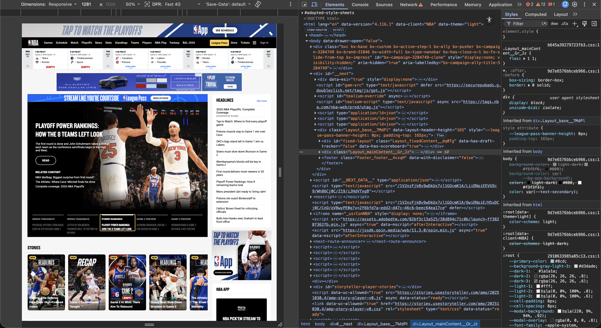
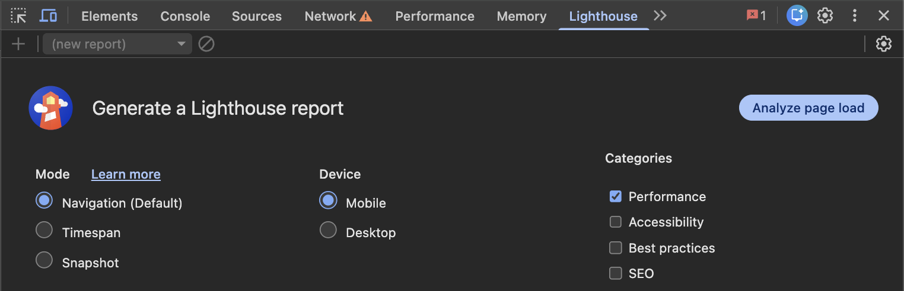
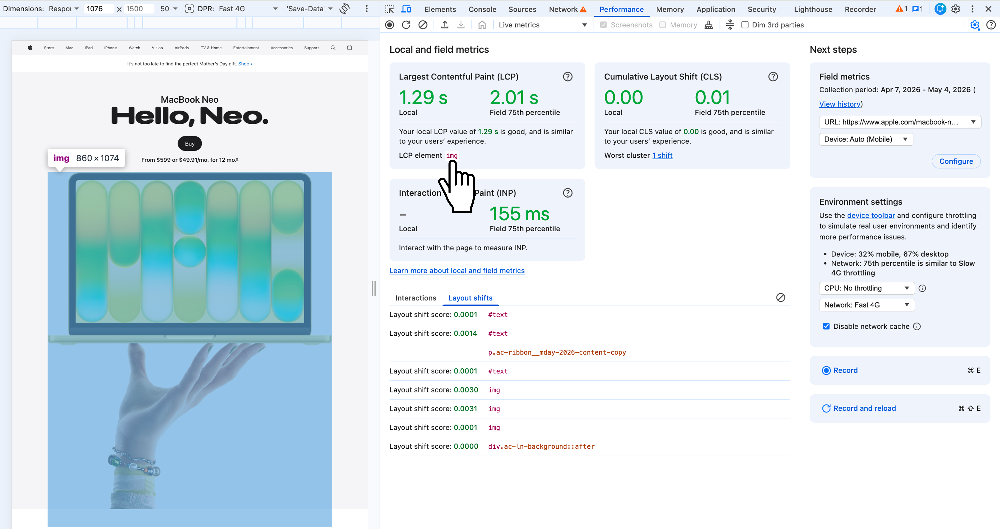
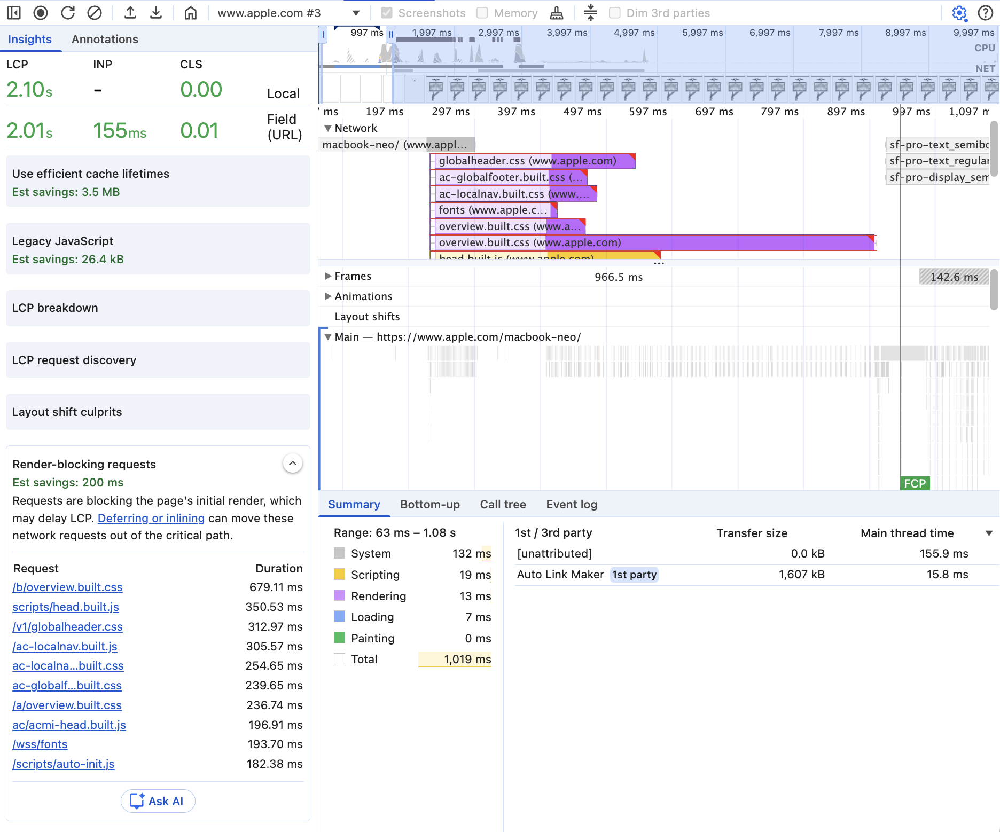
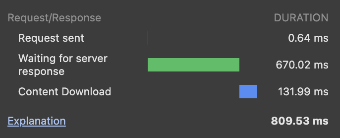
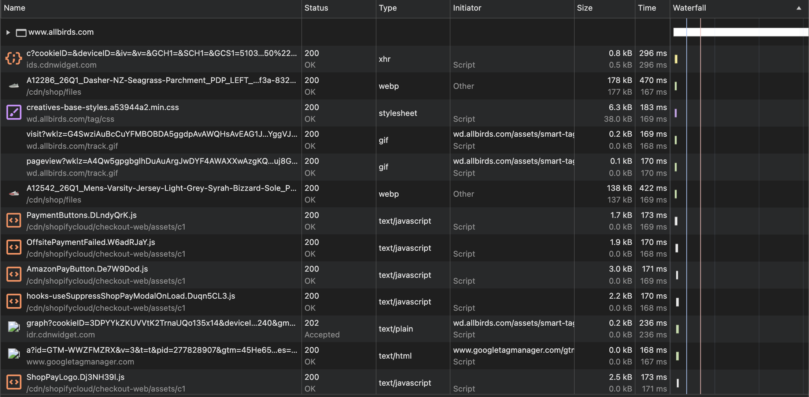
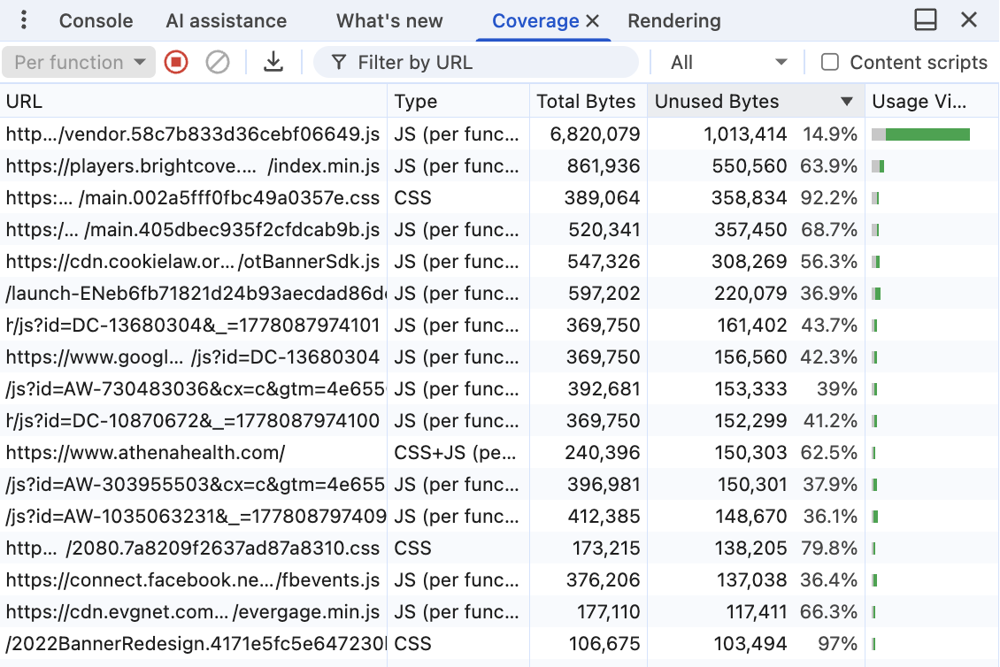

A slow page is easy to notice, but harder to diagnose. The issue could be large images, heavy JavaScript, render-blocking CSS, layout shifts, third-party tools, slow server response times, or a mix of several problems.
That is where Chrome DevTools helps.
PageSpeed Insights is useful for a quick audit, but DevTools shows what is actually happening as the page loads. You can see where the slowdown starts, what is causing it, and what to fix first.
In this guide, I'll focus on the DevTools areas most useful for diagnosing site speed issues: Lighthouse, Performance, Network, Coverage, and Console.
How to open Chrome DevTools
Before we get into each tab, open the page you want to analyze in Chrome Incognito mode.
Then right-click anywhere on the page and select Inspect.
You can also use a keyboard shortcut: Cmd + Option + I on Mac or Ctrl + Shift + I on Windows.
Chrome DevTools will open on the side or bottom of the browser. At the top, you'll see tabs like Elements, Console, Network, Performance, and Lighthouse.

1Lighthouse: run a quick speed audit
Google Lighthouse is a free tool built into Chrome DevTools that helps you quickly evaluate the quality and performance of a webpage.
For site speed audits, it's usually the best place to start because it gives you a baseline report, highlights the metrics that need attention, and helps you decide where to investigate next.
One of the most important parts of that report is Core Web Vitals, a set of metrics developed by Google to measure user experience. They measure three things: how quickly the main content loads, how responsive the page feels, and whether the layout stays stable while the page loads.
How to run a Lighthouse report
- Open the page in Chrome, right-click, and click Inspect.
- Go to the Lighthouse tab. If you don't see it, click the » icon.
- For most audits: select Performance, choose Mobile, and keep Navigation mode.
- Click Analyze page load.

What to Look For
The key performance metrics to look for in Lighthouse are:
| Metric | What it measures | Thresholds |
|---|---|---|
|
Largest Contentful Paint (LCP) |
When the largest visible image or text block appears in the viewport. Reflects when the main content feels loaded. |
Good ≤ 2.5s
Okay 2.5–4s
Poor > 4s
|
|
Total Blocking Time (TBT) |
How long the browser is blocked from responding to user input. The lab equivalent of First Input Delay (FID). High TBT usually means JavaScript is keeping the browser busy. |
Good ≤ 200ms
Okay 200–600ms
Poor > 600ms
|
|
Cumulative Layout Shift (CLS) |
How much the page moves around while it loads. A high score usually means images, ads, fonts, banners, or injected content are shifting the layout. |
Good ≤ 0.1
Okay 0.1–0.25
Poor > 0.25
|
First Contentful Paint (FCP) |
When the first text or image appears on the screen. Shows whether the page gives users an early visual response. |
Good ≤ 1.8s
Okay 1.8–3s
Poor > 3s
|
Speed Index |
How quickly visible content appears during load. Useful for understanding how fast the page feels visually. |
Good ≤ 3.4s
Okay 3.4–5.8s
Poor > 5.8s
|
Lighthouse combines these metrics into an overall performance score from 0 to 100. The score is helpful as a quick benchmark, but the metric details give you more actionable information.
LCP, TBT, and CLS, the three Core Web Vitals, make up 70% of the weighted Lighthouse performance score, so they're usually the metrics worth reviewing first.
Insights vs. Diagnostics
Use the metrics to understand which part of the experience is weak. Then use Insights and Diagnostics to understand what may be causing the issue and where to investigate next.
Insights give you the big picture. Instead of listing dozens of disconnected warnings, Lighthouse groups related issues into higher-level themes like "LCP bottlenecks" or "CLS culprits." This makes it easier to understand what's actually driving the problem without getting lost in individual line items.
Diagnostics are where you go deeper. This is where Lighthouse shows the specific files, elements, and technical details behind those issues — things like large JavaScript files, exact layout shift elements, or caching behavior.
Once you understand both, you can move into fixing the issue more confidently.
How to fix common site speed issues
Once Lighthouse highlights the metrics dragging the page down, the next step is figuring out how to fix them.
You can use the "Show audits relevant to" filter to narrow the audit list to issues tied to a specific metric: All, FCP, LCP, TBT, or CLS. Clicking one of these filters shows the audits most relevant to that metric, along with specific issues and recommended fixes.
Below are the most common causes for each page speed issue and the fixes that tend to work.
Largest Contentful Paint (LCP) Core Web Vital
LCP issues usually come from one of four places: the server is too slow, important CSS or JavaScript is blocking the page, the LCP resource is too large, or the main content depends too much on client-side JavaScript.
- Slow server response times. The server takes too long to send the page to the browser, delaying the rest of the load.
- Improve server performance.
- Use a CDN to serve pages from locations closer to users.
- Cache static assets and HTML.
- Render-blocking JavaScript and CSS. Scripts or stylesheets delay the browser from showing the main content.
- Minify and compress CSS and JavaScript files.
- Inline the CSS needed to style above-the-fold content.
- Defer CSS or JavaScript that is not needed right away.
- Slow resource load times. Large images, videos, fonts, or other files take too long to load.
- Compress images.
- Use properly sized media.
- Preload the LCP image or other critical resources.
- Compress CSS, JavaScript, and HTML.
- Client-side rendering. Important content depends on JavaScript before it can appear on the page.
- Reduce critical JavaScript.
- Avoid making key content depend entirely on JS.
- Consider server-side rendering for important pages.
On the CentralBank.com homepage, several issues stand out as contributing to the high LCP:
- Below-the-fold images load before the LCP image. The browser is spending network resources on images users cannot see yet, which delays the main above-the-fold image.
- The LCP image is a CSS background image. Browsers cannot discover a background image until the CSS is downloaded, parsed, and applied to the element. Switch the hero image to a standard <img> or <picture> element with fetchpriority="high".
- Mobile users are downloading an oversized image. The page serves a 1000px image for a 430px display area. Use srcset and sizes so mobile users get a smaller version.
- The LCP image is a JPEG. Convert the hero image to WebP or AVIF. Modern formats can reduce file size by 30–50% while keeping similar visual quality.
- Several images are requested through JavaScript. Some image requests show the initiator as www.centralbank.com/:838 — Script. This is fine for some below-the-fold images, but above-the-fold images should not depend on JavaScript before the browser can request them.
Total Blocking Time (TBT) Core Web Vital
TBT issues almost always come from one place: JavaScript keeping the main thread too busy to respond to user input.
- Heavy JavaScript. JavaScript is keeping the main thread busy and the browser can't respond to user input quickly.
- Split large JavaScript tasks into smaller chunks.
- Prioritize JS needed for key interactions so users can interact without delay.
- Use a web worker to run tasks outside the main browser thread.
- Reduce JavaScript execution time.
Cumulative Layout Shift (CLS) Core Web Vital
CLS issues usually come from one of three places: images without dimensions, content that loads in late, or fonts swapping after text is already visible.
- Images without dimensions. Without width and height attributes, the browser can't allocate space until the image downloads, shifting nearby elements.
- Add width and height attributes on images and videos.
- Dynamically injected content. Embedded content (e.g., social posts or widgets) can load at unpredictable heights, causing layout shifts.
- Reserve space before it loads, such as setting a minimum height for the container.
- Fonts loading after text appears. Fonts can swap in after text is already visible, which may cause the layout to shift.
- Preload important font files.
On Xvivo.com, several issues in the hero section stand out as contributing to CLS:
- Hero fonts are swapping in late. The hero headline uses "F37 Judge" and "Montserrat." The text may render first with a fallback font, then shift when the final font files load. Because the headline uses a heavy "F37 Judge" weight, the character widths and line height can change significantly, causing the hero content container to resize after the initial render.
- The background video does not have a poster image. The hero video is absolutely positioned with height: 100%, but it does not appear to use a poster attribute. Without a poster image, the browser may not have a stable visual placeholder before the video metadata or first frame loads. Add a poster="image-url.jpg" attribute so the browser can hold the space more consistently while the video loads.
- The hero layout depends on negative positioning. The parent .wp-block-cover uses top: -11.5rem and margin-bottom: -11.5rem. Negative offsets on large above-the-fold containers can make the layout more fragile, especially when fonts, video, or other assets load after the initial paint. When those elements settle, the browser may recalculate the hero position and shift nearby content.
- The hero container needs a more stable height. The hero relies on layout rules that can change as text and media load. Set a fixed height or explicit aspect-ratio on the hero container so the space is reserved from the start.
First Contentful Paint (FCP)
FCP issues usually come from CSS getting in the way: either external stylesheets blocking the page from rendering, or heavy and unused styles slowing down what the browser has to compute.
- Render-blocking external stylesheets. External CSS can delay the first visible content because the browser has to download and process the stylesheet before showing the page.
- Inline styles for above-the-fold content.
- Heavy or unused style calculations. Complex or unused CSS gives the browser more work to do before it can show content.
- Simplify CSS.
- Reduce complex selectors.
- Remove styles the page does not use.
2Performance: diagnose CWV issues
The Performance tab is a useful starting point for troubleshooting page speed issues. It can help you understand what is slowing the page down and identify actionable fixes for Core Web Vitals.
To run a performance report, open Chrome DevTools in Incognito Mode, go to the Performance tab, then click the Record and reload icon to run a lab test.

Once the report finishes loading, connect field data in the right column. This lets you compare your local test with Core Web Vitals data from real users.
Review Core Web Vitals
Click the home icon in the toolbar to see your page's Core Web Vitals. From there, you can inspect each metric more closely:

- Largest Contentful Paint (LCP): hover over the LCP element in the Largest Contentful Paint card to see which element is counted as the LCP on the page.
- Cumulative Layout Shift (CLS): hover over the Worst cluster in the CLS card to highlight the area of the page where layout shifts are happening.
- Interaction to Next Paint (INP): interact with the page on the left to populate the INP card — open the navigation, click buttons, use filters, or interact with forms. Chrome will show a local INP value so you can see whether the page responds quickly.

Further performance insights
Click the sidebar icon to open more detailed information about each issue. You can also click Ask AI to get more context on what may be causing the issue and how to fix it. To enable this, go to DevTools Settings > AI innovations.


3Network: analyze page requests
The Network tab shows every request a page makes as it loads — HTML, CSS, JavaScript, images, fonts, API calls, videos, and third-party scripts — in chronological order.
To use it, open the Network tab and reload the page. Chrome will populate the panel.
The most important part is the waterfall chart. It shows when each request starts, how long it waits, how long it takes to download, and when it finishes.
A healthy waterfall usually looks compact. Important resources start early, many files load in parallel, and the page finishes loading in a shorter amount of time.
A slow waterfall often looks stretched out. You may see:
- Files loading one after another instead of together
- Long request bars
- Important resources starting late
- Gaps where the browser is waiting
- Third-party scripts competing with critical resources
Hover over any request in the waterfall to see a timing breakdown. You can also click a request and open the Timing tab for more detail.
Read the network panel
Network summary
At the bottom of the Network panel, Chrome gives you a quick summary of the page load, including total requests, transferred data, resource size, finish time, DOMContentLoaded, and load time. Use this to get a fast sense of how heavy the page is before reviewing individual files.
Size, Time, and Waterfall columns
These columns help you see how large each file is, how long it takes to load, and when it loads during the page request.
The Size, Time, and Waterfall columns show how large each file is, how long it took to load, and when it loaded during the page request.
Use the Waterfall column to see when each request started, how long it waited, and how long it took to download.
- Turn on color-code resource types in Network settings to make the waterfall easier to scan.
- Enable screenshots to connect the timeline with what users actually see as the page loads.
- Enable big request rows so Chrome shows both the compressed (top value) and uncompressed (bottom value) size — if the two values are the same, compression may not be working.
Find slow requests
Check the initial HTML request first
The first thing I usually check is the main document request. This is normally the first row in the waterfall and matches the page URL.
Hover over the waterfall for that request and look for Waiting for server response. This is essentially the page's Time to First Byte (TTFB).
The server is slow if you see a long Waiting for server response segment, a large gap before other requests begin, and other resources waiting until the HTML request finishes.
For example, the Gap.com request below shows a TTFB of 670 ms, which is worth reviewing. As a general rule, anything above 500 ms should be investigated.

If the server takes too long to return the initial HTML, the rest of the page starts late. The browser may not be able to discover the page's CSS, JavaScript, images, fonts, metadata, structured data, or internal links until the HTML document comes back.
| Common causes | How to fix |
|---|---|
|
|
Render-blocking CSS and JavaScript
After the HTML loads, check what the browser requests next. If the start of the waterfall is filled with CSS or JavaScript, those files may be delaying the first render because the browser has to load, read, or run them before the page appears.
Use the CSS and JS filters in the Network tab to find large files, early-loading scripts, and resources that load before visible content appears.
The goal is to let the browser paint useful content as early as possible, even if the rest of the page continues loading.
| Common causes | How to fix |
|---|---|
|
|
LCP element loading too late
If Lighthouse shows poor LCP, the Network tab can help you see whether the LCP element is being discovered too late. The LCP element is often a hero image, featured image, large heading, video poster, or major above-the-fold content block.
Check where the LCP that you discovered in the Performance tab starts in the waterfall. A bad pattern often looks like this: the HTML loads first, then CSS, JavaScript, and other page resources load, and only after that does the hero image start downloading.
For example, on the Allbirds homepage, the LCP element is the hero image: 26Q2_Pantone_Site_Homepage_Hero_Grid_Static_Desktop_16x9...jpg.
In the waterfall, that image appears after many other requests instead of near the start of the page load. Since the browser cannot download the LCP image until it discovers it, that late start is directly contributing to their poor LCP.

| Common causes | How to fix |
|---|---|
|
|
Find heavy resources
Large images and oversized downloads
Images are often one of the biggest contributors to page weight. In the Network tab, filter by Img and sort by Size to find the largest image files.
As a general rule, images around 300–500 KB are worth checking, 500 KB–1 MB should be investigated, and anything over 1 MB should be treated as high priority.
Large images can slow down downloads and directly affect LCP, especially if they appear above the fold.

| Common cause | How to fix |
|---|---|
|
|
Large JavaScript bundles
Large JavaScript files can slow the page down even after they finish downloading. The browser still has to parse, compile, and execute that code — work that delays rendering and makes the page feel less responsive, especially on slower mobile devices.
Filter by JS and sort by Size.
Why it matters: a page can look like it loaded while the browser is still busy processing JavaScript in the background. This is one of the biggest differences between “the page loaded” and “the page feels usable.”
| What to look for | How to fix |
|---|---|
|
|
Third-party scripts
Third-party scripts are one of the most common causes of performance problems on large websites. In the Network tab, look for requests from domains like googletagmanager.com, assets.adobedtm.com, facebook.net, doubleclick.net, hotjar.com, linkedin.com, qualtrics.com, and cookielaw.org.
These tools often include analytics platforms, tag managers, ad scripts, chat widgets, heatmaps, personalization tools, and tracking pixels.
Why it matters: third-party tools can compete with critical resources, trigger additional requests, add main-thread work, and delay rendering.
| What to watch for | How to fix |
|---|---|
|
|
Your own content should not have to compete with marketing scripts for early bandwidth.
4Coverage: find unused code
The Coverage tab helps identify CSS and JavaScript that loads but is never actually used. This is extremely common on modern websites.
Many sites load entire CSS frameworks, large JavaScript libraries, unused plugins, or scripts needed for only one component — even when most of the page does not use them.
To open it, hit Cmd + Shift + P (Mac) or Ctrl + Shift + P (Windows) inside DevTools, search for "Coverage," then reload the page. Chrome will show the total bytes loaded, unused bytes, and percentage of unused code for each file.
1. Large unused JavaScript
This combines large first-party JavaScript with high unused bytes, vendor bundles that are mostly unused, interaction-only JS loaded upfront, and mobile Coverage showing desktop-only code. 500 KB+ of unused JavaScript should be considered high priority.

| Cause | How to fix |
|---|---|
|
The page is loading JavaScript it does not actually need. This often happens when one large app, vendor, or design-system bundle loads across every template. |
|
2. Large unused CSS
This combines general CSS files with high unused bytes, render-blocking CSS with high unused bytes, and design-system or theme CSS that's mostly unused. 150 KB+ of unused CSS should be considered high priority.
| Cause | How to fix |
|---|---|
|
The page is loading CSS it does not need. This often happens when a site loads styles for every component, template, or CMS block, even if the page only uses a small portion of them. If that CSS is render-blocking, the browser may delay paint for styles that are not even used. |
|
5Console: run quick checks with JS
The Console tab is useful because it lets you run quick JavaScript checks directly on the page.
For site speed audits, this can help you spot issues like oversized images, lazy-loaded hero images, missing image dimensions, missing srcset markup, CSS background images, synchronous scripts, third-party scripts, and large resources.
1. Find oversized images
Why it matters: Finds images being downloaded much larger than they appear on the page.
How to fix: Use responsive images, image CDN resizing, and better srcset/sizes.
Paste into Console[...document.images]
.map(img => {
const rect = img.getBoundingClientRect();
return {
src: img.currentSrc || img.src,
natural: `${img.naturalWidth}x${img.naturalHeight}`,
rendered: `${Math.round(rect.width)}x${Math.round(rect.height)}`,
oversizeRatio: rect.width && rect.height
? Math.round((img.naturalWidth * img.naturalHeight) / (rect.width * rect.height))
: null
};
})
.filter(img => img.oversizeRatio && img.oversizeRatio > 4)
.sort((a, b) => b.oversizeRatio - a.oversizeRatio);2. Find lazy-loaded images above the fold
Why it matters: Above-the-fold images shouldn't usually be lazy-loaded, especially the LCP image.
How to fix: Remove loading="lazy" from LCP/hero images.
[...document.images]
.filter(img => {
const rect = img.getBoundingClientRect();
return rect.top < window.innerHeight && img.loading === 'lazy';
})
.map(img => ({
src: img.currentSrc || img.src,
alt: img.alt,
loading: img.loading,
top: Math.round(img.getBoundingClientRect().top)
}));3. Find below-the-fold images that are not lazy-loaded
Why it matters: Below-the-fold images can compete with critical resources during initial load.
How to fix: Add loading="lazy" to non-critical below-the-fold images.
[...document.images]
.filter(img => {
const rect = img.getBoundingClientRect();
return rect.top > window.innerHeight && img.loading !== 'lazy';
})
.map(img => ({
src: img.currentSrc || img.src,
alt: img.alt,
loading: img.loading || '[not set]',
top: Math.round(img.getBoundingClientRect().top)
}));4. Find images missing dimensions
Why it matters: Missing dimensions can cause layout shifts.
How to fix: Add width and height attributes, or reserve space with CSS aspect-ratio.
Paste into Console[...document.images]
.filter(img => {
const rect = img.getBoundingClientRect();
const visible = rect.width > 20 && rect.height > 20;
const missingAttrs = !img.hasAttribute('width') || !img.hasAttribute('height');
return visible && missingAttrs;
})
.map(img => ({
src: img.currentSrc || img.src,
alt: img.alt || '[missing alt]',
widthAttr: img.getAttribute('width'),
heightAttr: img.getAttribute('height'),
renderedWidth: Math.round(img.getBoundingClientRect().width),
renderedHeight: Math.round(img.getBoundingClientRect().height)
}));5. Find images missing srcset
Why it matters: Without srcset, mobile users may download desktop-sized images.
How to fix: Add responsive image markup and accurate sizes.
Paste into Console[...document.images]
.filter(img => !img.srcset && img.getBoundingClientRect().width > 100)
.map(img => ({
src: img.currentSrc || img.src,
alt: img.alt,
renderedWidth: Math.round(img.getBoundingClientRect().width),
hasSrcset: !!img.srcset
}));6. Find CSS background images
Why it matters: If the LCP image is loaded as a CSS background, the browser may discover it late.
How to fix: Use an HTML <img> or <picture> for important content images.
[...document.querySelectorAll('*')]
.map(el => {
const bg = getComputedStyle(el).backgroundImage;
const rect = el.getBoundingClientRect();
return {
element: el.tagName.toLowerCase() + (el.className ? '.' + String(el.className).trim().replace(/\s+/g, '.') : ''),
backgroundImage: bg,
width: Math.round(rect.width),
height: Math.round(rect.height),
top: Math.round(rect.top)
};
})
.filter(item => item.backgroundImage && item.backgroundImage !== 'none' && item.width > 50 && item.height > 50);7. Find scripts without async or defer
Why it matters: Synchronous scripts can block HTML parsing and delay rendering.
How to fix: Use defer for first-party scripts and async for independent third-party scripts.
[...document.scripts]
.filter(script => script.src && !script.async && !script.defer && script.type !== 'module')
.map(script => ({
src: script.src,
async: script.async,
defer: script.defer
}));8. List third-party scripts
Why it matters: Third-party scripts often add hidden network and main-thread cost.
How to fix: Audit vendors, remove unused tools, delay non-essential scripts, and avoid duplicate loading.
Paste into Console[...document.scripts]
.filter(script => script.src)
.filter(script => new URL(script.src).hostname !== location.hostname)
.map(script => ({
host: new URL(script.src).hostname,
src: script.src,
async: script.async,
defer: script.defer
}));9. Find largest resources
Why it matters: A few large files often create most of the page-weight problem.
How to fix: Optimize based on type — images, JS, CSS, video, fonts, or third-party resources.
Paste into Consoleperformance.getEntriesByType('resource')
.map(r => ({
name: r.name,
type: r.initiatorType,
transferKB: Math.round(r.transferSize / 1024),
decodedKB: Math.round(r.decodedBodySize / 1024),
durationMS: Math.round(r.duration)
}))
.sort((a, b) => b.transferKB - a.transferKB)
.slice(0, 25);